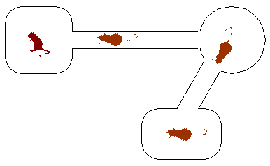
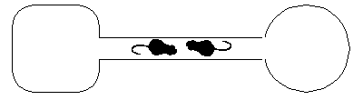
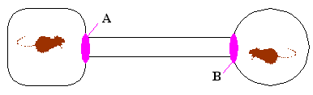

Semaphores
Problem 1.
The following is a set of three interacting
processes that can access two shared semaphores:
semaphore U = 3;
semaphore V = 0;
[Process 1] [Process 2] [Process 3]
L1:wait(U) L2:wait(V) L3:wait(V)
type("C") type("A") type("D")
signal(V) type("B") goto L3
goto L1 signal(V)
goto L2
Within each process the statements are executed sequentially, but
statements from different processes can be interleaved in any order
that's consistent with the constraints imposed by the semaphores.
When answering the questions below assume that once execution begins,
the processes will be allowed to run until all 3 processes are stuck
in a wait() statement, at which point execution is halted.
-
 Assuming execution is eventually halted, how many C's are printed
when the set of processes runs?
Assuming execution is eventually halted, how many C's are printed
when the set of processes runs?
-
Assuming execution is eventually halted, how many D's are
printed when this set of processes runs?
-
What is the smallest number of A's that might be printed when
this set of processes runs?
-
Is CABABDDCABCABD a possible output sequence when this set of
processes runs?
-
Is CABACDBCABDD a possible output sequence when this set of
processes runs?
-
Is it possible for execution to be halted with either U or V
having a non-zero value?
Problem 2.
The following pair of processes share a common variable X:
Process A Process B
int Y; int Z;
A1: Y = X*2; B1: Z = X+1;
A2: X = Y; B2: X = Z;
X is set to 5 before either process begins execution. As usual,
statements within a process are executed sequentially, but statements
in process A may execute in any order with respect to statements in
process B.
-
How many different values of X are possible after both
processes finish executing?
-
Suppose the programs are modified as follows to use a shared binary
semaphore S:
Process A Process B
int Y; int Z;
wait(S); wait(S);
A1: Y = X*2; B1: Z = X+1;
A2: X = Y; B2: X = Z;
signal(S); signal(S);
S is set to 1 before either process begins execution and, as
before, X is set to 5.
Now, how many different values of X are possible after both
processes finish executing?
-
Finally, suppose the programs are modified as follows to use a
shared binary semaphore T:
Process A Process B
int Y; int Z;
A1: Y = X*2; B1: wait(T);
A2: X = Y; B2: Z = X+1;
signal(T); X = Z;
T is set to 0 before either process begins execution and, as
before, X is set to 5.
Now, how many different values of X are possible after both
processes finish executing?
Problem 3.
The following pair of processes share a common set of variables: "counter",
"tempA" and "tempB":
Process A Process B
... ...
A1: tempA = counter + 1; B1: tempB = counter + 2;
A2: counter = tempA; B2: counter = tempB;
... ...
The variable "counter" initially has the value 10 before either process
begins to execute.
-
What different values of "counter" are possible when both processes have
finished executing? Give an order of execution of statements from processes
A and B that would yield each of the values you give. For example, execution
order A1, A2, B1, B2 would yield the value 13.
-
Modify the above programs for processes A and B by adding appropriate
signal and wait operations on the binary semaphore "sync" such that the only
possible final value of "counter" is 13. Indicate what should be the initial
value of the semaphore "sync".
-
Draw a precedence graph that describes all the possible orderings of
executions of statements A1, A2, B1 and B2 that yield the a final value of
11 for "counter".
-
Modify the original programs for processes A and B by adding binary
semaphores and signal and wait operations to guarantee that the final result
of executing the two processes will be "counter" = 11. Give the initial values
for every semaphore you introduce. Try to put the minimum number of constraints
on the ordering of statements. In other words, don't just pick one ordering that
will yield 11 and enforce that one by means of semaphores; instead, enforce only
the essential precedence constraints marked in your solution to question 3.
Problem 4.
The figure below shows two processes that must cooperate in computing
N2 by taking the sum of the first N odd integers.
Process P Process Q
N = 5;
Sqr = 0;
loopP: loopQ:
if (N==0) Sqr = Sqr + 2*N + 1;
goto endP;
N = N - 1; goto loopQ;
goto loopP;
endP:
print(Sqr);
-
Add appropriate semaphore declarations and signal and wait statements
to these programs so that the proper value of Sqr (i.e., 25) will be
printed out. Indicate the initial value of every semaphore you add.
Insert the semaphore operations so as to preserve the maximum degree
of concurrency between the two processes; do not put any nonessential
constraints on the ordering of operations. Hint: Two semaphores
suffice for a simple and elegant solution.
Problem 5.
A computer has three commonly used resources designated A, B and C.
Up to three processes designated X, Y and Z run on the computer and
each makes periodic use of two of the three resources.
- Process X acquires A, then B, uses both and then releases both.
- Process Y acquires B, then C, uses both and then releases both.
- Process Z acquires C, then A, uses both and then releases both.
-
If two of these processes are running simultaneously on the machine,
can a deadlock occur? If so, describe the deadlock scenario.
-
Describe a scenario in which deadlock occurs if all three
processes are running simultaneously on the machine.
-
Modify the algorithm for acquiring resources so that deadlock
cannot occur with three processes running.
Problem 6.
The following is a question about dining computer
scientists. There are 6 computer scientists seated at a circular
table. There are 3 knives at the table and 3 forks. The knives and
forks are placed alternately between the computer scientists. A large
bowl of food is placed at the center of the table. The computer
scientists are quite hungry, but require both a fork and a knife to
eat.
Consider the following policies for eating and indicate for each
policy if it can result in deadlock.
-
- Attempt to grab the fork that sits between you and your neighbor until
you are successful.
- Attempt to grab the knife that sits between you and your neighbor
until you are successful.
- Eat
- Return the fork.
- Return the knife.
-
- Attempt to grab any fork on the table until you are successful
(if there are many forks grab the closest one).
- Attempt to grab any knife on the table until you are succesful
(if there are many forks grab the closest one).
- Eat
- Return the knife.
- Return the fork.
-
- Flip a coin to decide if you are going to first try for a fork or a
knife.
- Attempt to grab your choice until you are successful
(if there are many of that utensil grab the closest one).
- Attempt to grab the other type of utensil until you are successful
(if there are many of that utensil grab the closest one).
- Eat
- Return the knife.
- Return the fork.
Problem 7.
Gerbitrail is a manufacturer of modular gerbil cages. A Gerbitrail
cage is assembled using a catalog of modules, including gerbil
"rooms" of various sizes and shapes as well as sections of
tubing whose diameter neatly accommodates a single gerbil. A typical
cage contains several intercon- nected rooms, and may house a
community of gerbils:

The Gerbitrail cages are immensely successful, except for one tragic
flaw: the dreaded GERBILOCK. Gerbilock is a situation that arises
when multiple gerbils enter a tube going in opposite directions,
meeting within the tube as shown below:

Since each gerbil is determined to move forward and there is
insufficient room to pass, both gerbils remain gerbilocked forever.
There is, however, hope on the horizon. Gerbitrail has developed
little mechanical ggates that can be placed at the ends of each tube,
and which can both sense and lock out gerbil crossings. All ggates are
controlled by a single computer. Each ggate X has two routines,
X_Enter and X_Leave, which are called when a gerbil tries to enter or
leave respectively the tube via that ggate; the gerbil is not allowed
to procede (ie, to enter or leave) until the Enter or Leave call
returns. Gerbitrail engi- neers speculate that these routines can
solve Gerbilock using semaphores.
They perform the following experiment:

where each of the ggates A and B are controlled by the following code:
semaphore S=???; /* Shared semaphore. */
A_Enter() /* Handle gerbil entering tube via A */
{ wait(S); }
A_Leave() /* Handle gerbil leaving tube via A */
{ signal(S); }
B_Enter() /* Handle gerbil entering tube via B */
{ wait(S); }
B_Leave() /* Handle gerbil leaving tube via B */
{ signal(S); }
-
What is the proper initial value of the semaphore S?
-
An argument among the Gerbitrail technical staff develops about
how the above solution should be extended to more complex cages with
multiple tubes. The question under debate is whether separate
semaphores should be allocated to each ggate, to each tube, or whether
a single semaphore should be shared for all gates. Help resolve the
argument. For each proposal, indicate OK if it works, SLOW if it works
but becomes burdensome in complex cages, and BAD if it doesn't
prevent gerbilock.
Single semaphore shared among all ggates: OK -- SLOW -- BAD
Semaphore for each tube: OK -- SLOW -- BAD
Semaphore for each ggate: OK -- SLOW -- BAD
-
Gerbitrail management decides to invest heavily in the revolutionary
technology which promises to wipe out the gerbilock threat
forever. They hire noted computer expert Nickles Worth to evaluate
their ggate approach and suggest improvements. Nickles looks at the
simple demonstration above, involving only 2 gerbils and a single
tube, and immediately objects. "You are enforcing non-essential
constraints on the behavior of these two gerbils", he exclaims.
What non-essential constraint is imposed by the ggate solution
involving only 2 gerbils and one tube? Give a specific scenario.
-
Nickles proposes that a new synchronization mechanism, the gerbiphore,
be defined to handle the management of Gerbitrail tubes. His proposal
involves the implementation of a gerbiphore as a C data structure, and
the allocation of a single gerbiphore to each tube in a Gerbitrail
cage configuration.
Nickles's proposed implementation is:
semaphore mutex=1;
struct gerbiphore { /* definition of "gerbiphore" structure*/
int dir; /* Direction: 0 means unspecified. */
int count; /* Number of Gerbils in tube */
} A, B, ...; /* one gerbiphore for each tube */
int Fwd=1, Bkwd=2; /* Direction codes for tube travel */
/* genter(g, dir) called with gerbiphore pointer g and direction dir
whenever a gerbil wants to enter the tube attached to g
in direction dir */
genter(struct gerbiphore *g, int dir) {
loop:
wait(mutex);
if (g->dir == 0)
g->dir = dir; /* If g->dir unassigned, grab it! */
if (g->dir == dir) {
g->count = 1 + g->count; /* One more gerbil in tube. */
*********; /* MISSING LINE! */
return;
}
signal(mutex);
goto loop;
}
/* gleave(g, dir) is called whenever a gerbil leaves the tube
attached to gerbiphore g in direction dir. */
gleave(struct gerbiphore *g, int dir) {
wait(mutex);
g->count = g->count - 1;
if (g->count == 0) g->dir = 0;
signal(mutex);
}
Unfortunately a blotch of red wine obscures one line of Nickles's
code. The team of stain analysts hired to decode the blotch eventually
respond with a sizable bill and the report that "it appears to be
Ch. Petrus, 1981". Again, your services are needed.
What belongs in place of ********* at the line commented
"MISSING LINE"?
-
Ben Bitdiddle has been moonlighting at Gerbitrail Research
Laboratories, home of the worlds largest gerbil population. Ben's
duties include computer related research and shoveling. He is anxious
to impress his boss with his research skills, in the hopes that
demonstrating such talent will allow him to spend less of his time
with a shovel.
Ben observes that the GRL Gerbitrail cage, housing millions of gerbils
and involving tens of millions of tubes, is a little sluggish despite
its use of Nickles Worth's fancy gerbiphore implementation. Ben
studies the problem, and finds that each gerbil spends a surprisingly
large amount of time in genter and gleave calls, despite the fact that
tubes are infrequently used due to their large number. Ben suspects
some inefficiency in the code. Ben focuses on the gleave code, and
collects statistics about which line of code in the gleave definition
is taking the most CPU time.
Which line of the (4-line) gleave body do you expect to be the most time
consuming?
-
Identify a class of inessential precedence constraints whose
imposition by Nickles's code causes the performance bottleneck
observed by Ben.
-
Briefly sketch a change to Nickles's code which mitigates the
performance bottleneck.
-
Encouraged by his success (due to your help), Ben decides to try more
aggressive performance improvements. He edits the code to gleave,
eliminating entirely the calls to wait and signal on the mutex
semaphore. He then tries the new code on a 2-gerbil, 1-tube cage.
Will Ben's change work on a 2-gerbil, 1-tube cage? Choose the best
answer.
- It still works fine. Nice work, Ben!
- Gerbilock may be caused by two nearly simultaneous genter calls.
- Gerbilock may be caused by two nearly simultaneous gleave calls.
- Gerbilock may be caused by nearly simultaneous gleave and genter
calls, followed by another genter call.
- Gerbilock can't happen, although the system may fail in other ways.
Problem 8.
Similar Software is a software startup whose 24 employees include you
and 23 lawyers. Your job is to finish the initial product: the Unicks
timesharing system for a single-processor Beta system. Unicks is very
similar to the OS code we've seen in lecture, and to a popular
workstation OS. To avoid legal entanglements, it incorporates a
distinguishing feature: an inter-process communication mechanism call
the tube.
A tube provides a flow-controlled communication channel among
processes. The system supports at most 100 different tubes, each
identified by a unique integer between 0 and 99. The system
primitives for communicating via tubes are the Beta SVCs WTube, which
writes the nonzero integer in R1 to the tube whose number is in R0,
and RTube, which reads a nonzero datum from the tube whose number is
passed in R0. Note that tubes can only be used to pass nonzero
integers between processes.
The Unicks handlers for WTube and RTube are shown below:
int Tubes[100]; /* max of 100 tubes */
WTube_handler() {
int TubeNumber = User.R0; /* which tube to write */
int Datum = User.R1; /* the data to write */
if (Tubes[TubeNumber] != 0) { /* wait until Tube is empty */
User.XP = User.XP - 4;
return;
} else {
Tubes[TubeNumber] = Datum; /* tube empty, fill it up! */
}
}
RTube_handler() {
int TubeNumber = User.R0; /* which tube to read */
if (Tubes[TubeNumber] == 0) { /* wait until there's data */
User.XP = User.XP - 4;
return;
} else {
User.R1 = Tubes[TubeNumber]; /* read the datum */
Tubes[TubeNumber] = 0; /* mark the tube as empty */
}
}
The handlers run as part of the Unicks kernel and will not be
interrupted, i.e., handling of interrupts is postponed until the
current process returns to user mode. Note that the initial values in
the Tubes array are zero, and keep in mind that only nonzero data is
to be written to (and read from) each tube.
-
Let Wi be the ith write on a tube, and Rj be the jth read. What
precedence constraint(s) does the above implementation enforce between
completion of the Wi and Rj?
-
You observe that a process that waits once will waste the remainder of
its quantum looping. Suggest a one-line improvement to each of the
handlers which will waste less time synchronizing the communication
processes.
-
Assume, for the remaining questions, that your improvement HAS NOT
been implemented; the original code, as shown, in being used.
Since tubes are advertised as a general mechanism for communication
among a set of Unix processes, it is important that they work reliably
when several processes attempt to read and/or write the
simultaneously. S. Quire, the ex-lawyer CEO, has been unable to
figure out just what the semantics of tubes are under these
circumstances. He finally asks you for help.
Describe what will happen if a process writes an empty tube while
multiple processes are waiting to read it. How many processes will
read the new value?
-
Describe what will happen if multiple processes write different values
to a tube at about the same time that another process is doing
successive reads from that tube. Will each value be read once? Will
at least one value be read, but some may be lost? Will garbage
(values other than those written) be read?
-
S. Quire suggests that the interrupt hardware be modified so that
timer interupts (which mark the end of the quantum for the currently
running process) are allowed to happen in both user and kernel mode.
How would this modification change your answer to parts (C) and (D)?
-
Customers have observed that Unicks seems to favor certain processes
under some circumstances. In particular, when one process writes data
to a tube while processes A, B, and C are waiting to read it, it is
typically the case that the amount of data read by A, B, and C will be
dramatically different.
Briefly explain the cause for this phenomenon.
-
Sketch, in a sentence or two, a plausible strategy for treating the
processes more equitably.
-
Nickles Worth, a consultant to Similar Software, claims that tubes can
be used to implement mutual exclusion-that is, to guarantee that at
most one process is executing code within a critical section at all
times. He offers an example template:
int TubeNumber = 37; /* tube to be used for mutual exclusion */
WTube(TubeNumber,1); /* one-time-only initialization */
while () { /* loop with critical section */
/* LOCK ACCESS */
<critical section>
/* UNLOCK ACCESS */
}
where the regions marked LOCK ACCESS and UNLOCK ACCESS use the tube
TubeNumber to ensure exclusive access to the code marked <critical section>.
These two regions may contain the forms
datum=RTube(TubeNumber) and Wtube(TubeNumber,datum) as a C interface
to the tube SVCs.
Fill in the LOCK and UNLOCK code above.